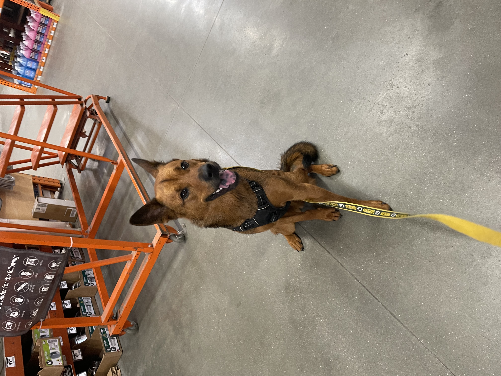

My name is Samantha but everyone calls me Sam. I am originally from West Palm Beach, Florida but relocated to Greensboro, North Carolina when I was ten. I moved to Raleigh for college and never left. I am the youngest of five siblings and have a really close family. I love being an aunt; I have three nieces (Katie, Joey, and Maggie) and one nephew (Griffin). During the pandemic my husband and I rescued a dog named Ranger and it was the best decision ever.
If I were to remain working in a corportate setting I would like to change industries and leave the financial services industry. I currently work in compliance IT for the bank and I would just like to find a product I am more connected to. Otherwise I would like to go into business for myself as perhaps a freelance web designer/developer.
Click here for a GoodReads list of 2022 books.